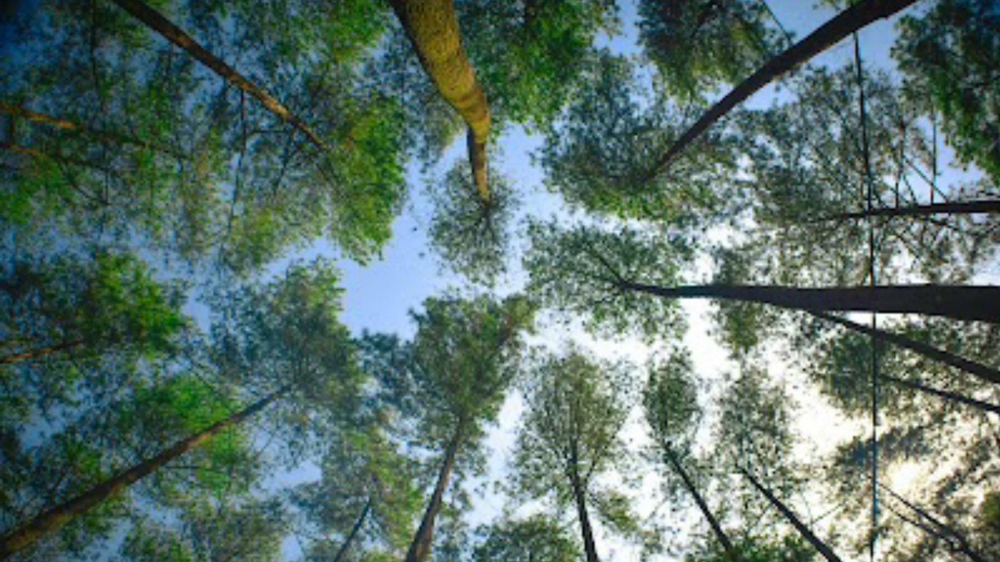

Hutan Pinus Nglimut
Bertemakan wisata nuansa alam, Kabupaten Kendal memiliki destinasi yang menyuguhkan keindahan Hutan Pinus Nglimut. Hutan Pinus Baon Nglimut Gonoharjo atau dikenal dengan Baon Pinus Forest Park mungkin belum banyak dikenal oleh masyarakat luas, bahkan bisa saja para netizen pun juga belum familiar akan keberadaanya. Terbukti dari minimnya informasi akan destinasi yang sebenarnya sudah apik ini, Memiliki akses jalan yang terbilang cukup mudah untuk ditempuh, bahkan dengan menggunakan mobil.
Harga Tiket Masuk
| Hari | Harga | Jam Operasional |
|---|---|---|
| Senin - Minggu | Rp.5.000 | 24 Jam |
Fasilitas

Beberapa fasilitas yang ada antara lain gazebo, panggung yang disediakan untuk swafoto, toilet, dan mushola. Pada masa pandemi, lokasi wisata Hutan Pinus Nglimut juga menerapkan protokol kesehatan. Tersedia tempat cuci tangan di awal gerbang atau pintu masuk sebagai persiapan jika destinasi wisata dibuka 100 persen. Yudisthira pengelola destinasi ini mengatakan, Wisata Hutan Pinus Nglimut memang memiliki panorama alam yang asri. Daerah ini juga sering dijadikan tempat berkumpul oleh komunitas atau keluarga.
Secara kasat mata tentu kamu akan melihat adanya hamparan hutan pinus di tempat piknik ini. Lebih dari itu, ternyata ada beberapa hal baik wahana maupun sarana yang cukup menarik yang perlu kamu tahu.
Kolam air hangat
Meski mengusung tema utama hutan pinus,namun di obyek ini ternyata juga terdapat sumber air panas layaknya Promas Greenland. Ukuran kolam memang kecil dan hanya cukup beberapa orang, namun kolam dengan desain bulat ada dua buah, jadi cukup lumayan.
Camping ground
Destinasi Wisata alam ini yang satu di Gonoharjo ini juga memiliki area yang cocok untuk kemah. Arealnya pun luas, yang mana cocok untuk acara camping rame-rame.
Wahana permainan
Ada wahana permainan yang cukup menghibur di Baon Pinus Forest Park. Salah satunya adalah motor ATV. Kamu bisa menjajal motor roda empat ini dan menikmati keasrian hutan pinus dengan harga sewa 25k.
Galery Pengunjung


Lokasi Hutan Pinus Nglimut
Baon Pinus Forest Park ini ternyata berlokasi tak jauh dari Pemandian Air Panas Nglimut dan Promas Greenland. Lokasi berada di sebelah selatan destinasi tersebut, Dusun Nglimut, Desa Gonoharjo, Kec. Limbangan, Kab. Kendal, Prov. Jawa Tengah.